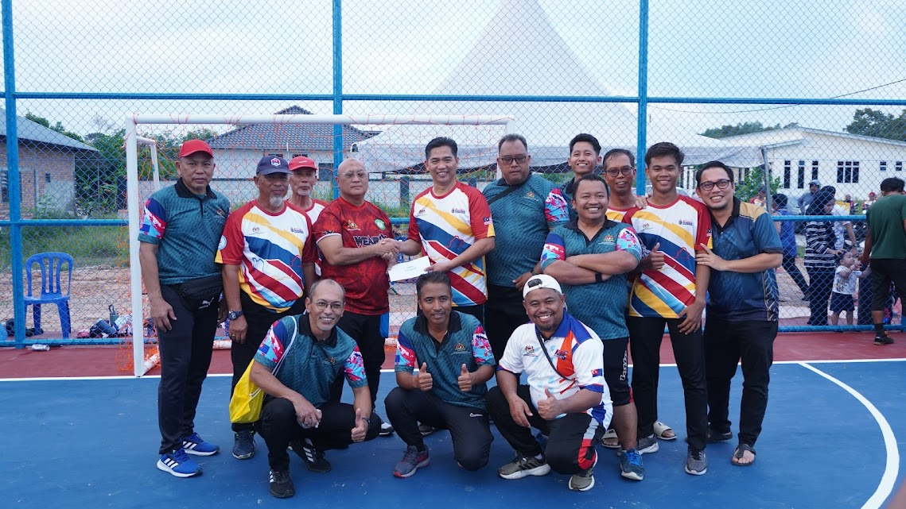
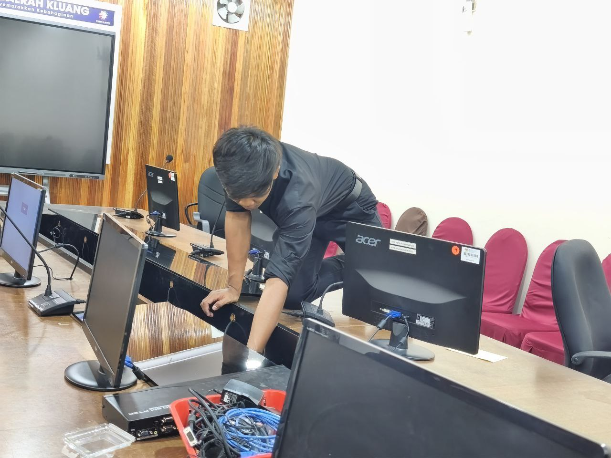
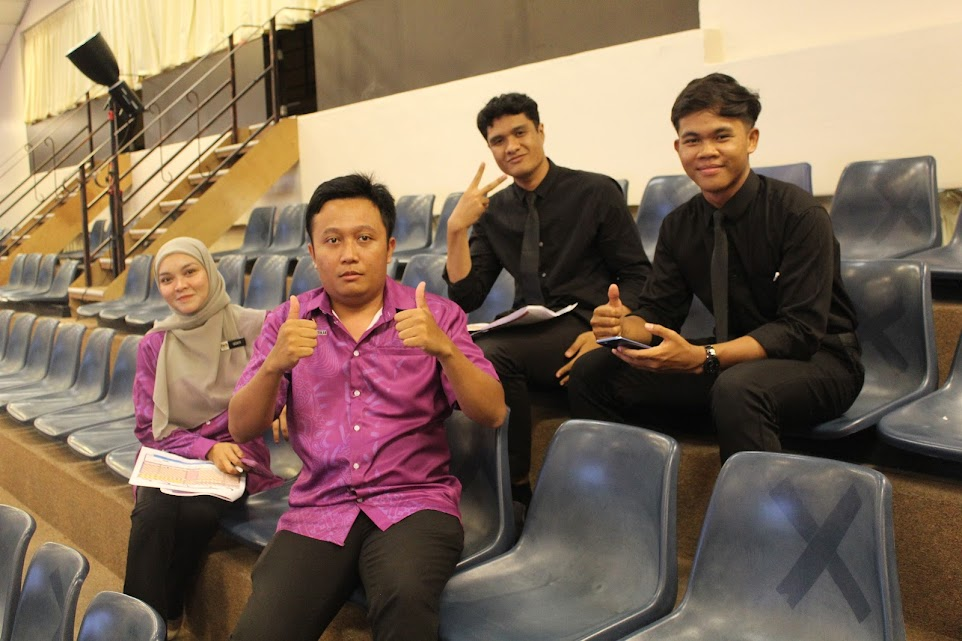
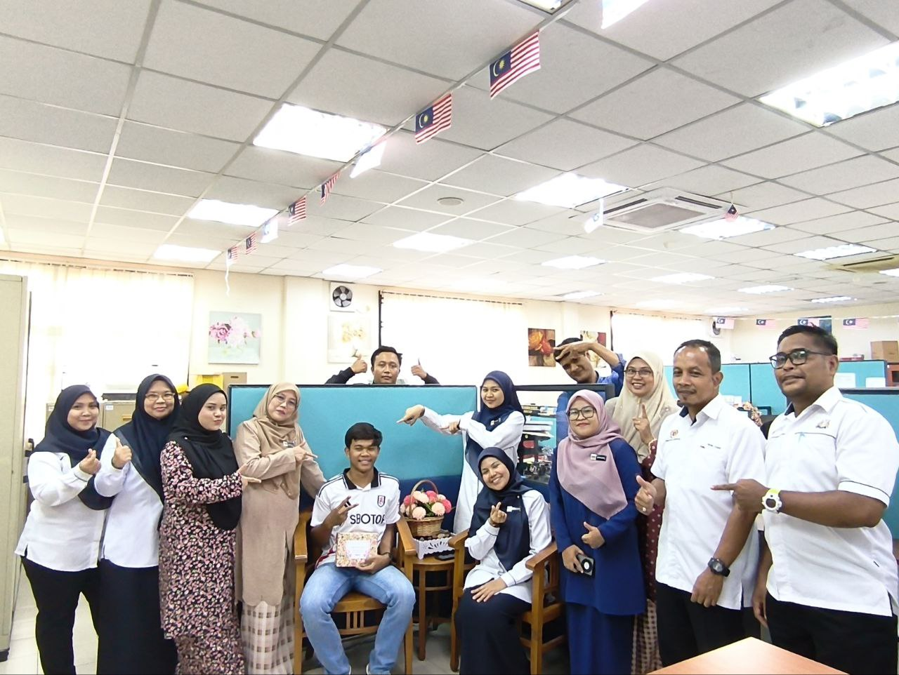

My Experience




Internship at Pejabat Pendidikan Daerah Kluang
The industrial training at Pejabat Pendidikan Daerah (PPD) Kluang has taught me many valuable lessons that contributed significantly to my personal and professional development. Throughout the internship, I learned to become a more responsible individual, particularly in carrying out tasks entrusted to me with diligence and integrity. I was exposed to real working environments where punctuality, accountability, and effective communication were essential in ensuring that daily operations ran smoothly.